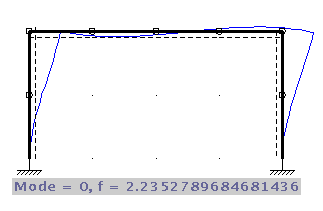
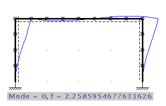
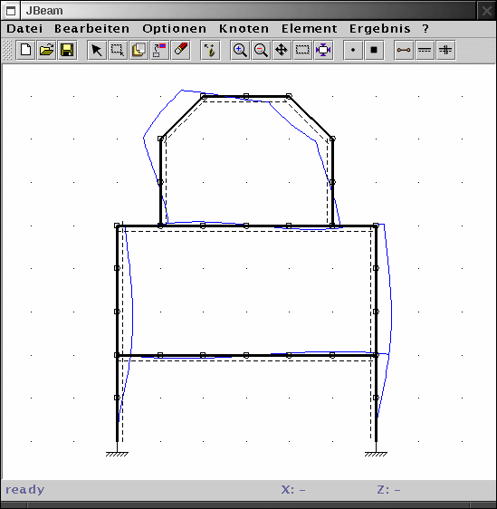

| zurück | Inhalt |
Neben einer statischen Berechnung der Schnittgrössen und Verschiebungen kann mit JBeam auch eine modale Analyse des Systems durchgeführt werden. Als Ergebnissgrössen erhält man die Frequenzen und Verschiebungsfiguren der Eigenformen des Systems.
Hierzu wird die konzentrierte Massenmethode eingesetzt. Daher sind die ermittelten Verschiebungen und Frequenzen nicht mehr exakt, sondern nur noch eine Näherung, die durch h-Adaption gegen den exakten Wert konvergiert.
Im praktischen Einsatz bedeutet dies, dass längere Stäbe in mehrere Elemente unterteilt werden müssen. Idealerweise rechnet man mit mindestens zwei unterschiedlich feinen Unterteilungen und vergleicht die Ergebnisse.

Die erste Eigenform (Mode 0) eines Rahmens wurde mit zwei
Elementierungen berechnet. Die Frequenzen der beiden Rechnungen
stimmen hier schon recht gut überein (2.24 zu 2.26 Hz).
Um höhere Eigenformen gut zu erfassen, sind generell feinere Elementierungen nötig.
Die Eingabe des Systems erfolgt wie bei der statischen Berechnung. Es sollten keine Lasten eingegeben werden. Die Massebelegung der Elemente kann analog zu den Querschnittswerten in den entsprechenden Dialogen vorgenommen werden.
Zur Berechnung wird nun 'Results - modal analysis' aufgerufen.
Analog zur statischen Berechnung können Verschiebungen (und Schnittgrößen unter den entsprechenden Einheitsverschiebungen) in verschiedenen Skalierungen angezeigt werden.
Die Verschiebungsfigur kann mit 'Results - animate mode' animiert
angezeigt werden.

Mit 'Results - show next mode' und 'previous mode' kann die gewünschte Eigenform ausgewählt werden. Nummer und Frequenz der Eigenform wird in der Statuszeile angezeigt.
| zurück | Inhalt |